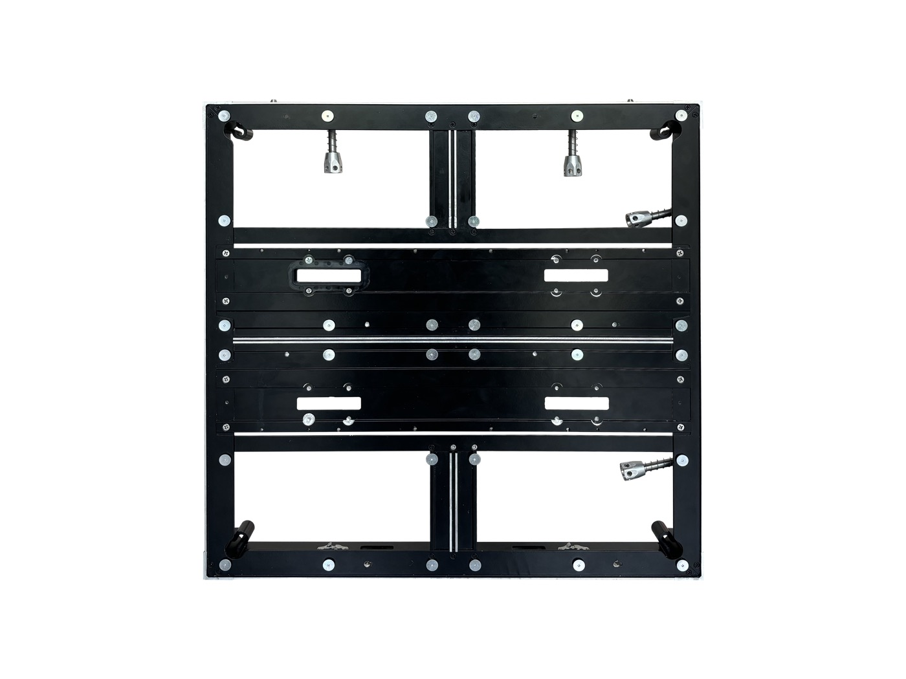
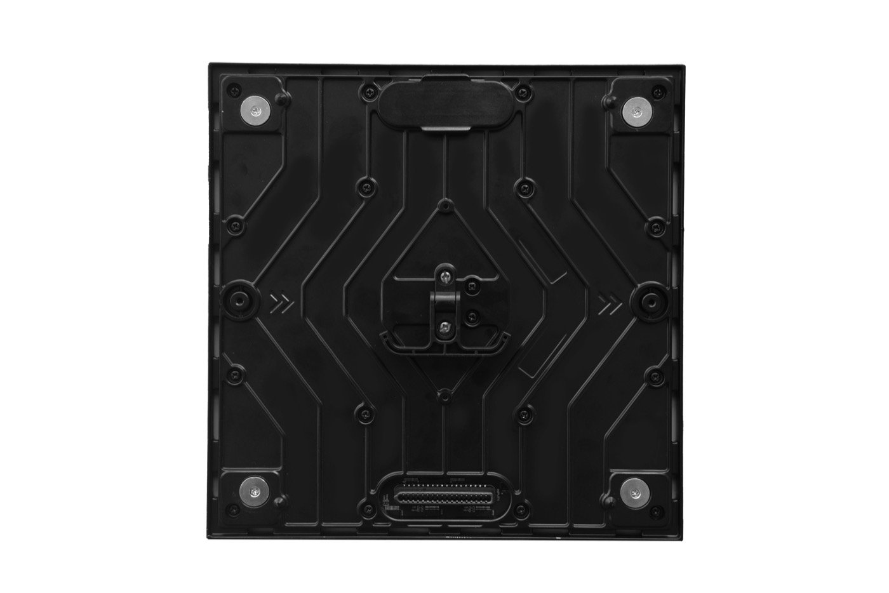

By David
Should you choose LED display OEM or ODM? Choose LED display OEM if you already own the brand, the design, and the customer relationship, and you want a factory to build to your own specification. Choose ODM if you want a proven product you can put your logo on without owning the design. The real boundary between the two is drawn by who owns the tooling, the design, and the after-sales responsibility.
The two labels are easy to confuse, because both end with your name on what looks like the same cabinet. The difference is not the product on the wall; it is the ownership behind it. OEM and ODM describe who commissions the design, who owns the tooling, and who carries the risk when something goes wrong.
This guide is written for brand owners, distributors, and integrators who want to sell LED displays under their own name. It explains where the OEM and ODM boundary actually sits, how tooling ownership works, what MOQ really depends on, and how to split responsibility so both sides know exactly what they owe.
In a true LED display OEM arrangement, you bring the specification. The design, the artwork, the cabinet dimensions, the connector layout, and the label are yours. The factory builds to your drawing and your bill of materials. You own the build package, and the product exists because you asked for it.
That is different from buying a catalogue product and printing your name on it. In a real OEM project the factory is a builder, not a product owner. This is why an OEM order usually starts with a drawing and a sample, not with a stock list. The buyer is paying for engineering and a tool, not just for units.
In an ODM arrangement, the factory already owns a product. It offers that product to several partners, who put their own brand on it. The design is not yours; the right to sell it under your name is. You reach the market faster and with far less engineering, but you share the product with whoever else the factory sells it to.
The table below maps the boundary across the dimensions that matter most to a buyer deciding which route to take. It is worth reading line by line, because the decision is rarely all-or-nothing.
| Dimension | OEM | ODM | Who Is Responsible |
|---|---|---|---|
| Product design | Your drawing and BOM | Factory's existing product | You in OEM; factory in ODM |
| Tooling and moulds | Usually funded by you | Owned by the factory | Whoever pays owns it |
| Branding | Your mark, built from the ground up | Your mark on a shared product | You in both |
| Differentiation | High: the product is unique to you | Low: shared with other partners | Set by the model |
| Time to market | Slower, starts at design | Faster, starts at sample | The model drives it |
| Quality ownership | You define the standard | Factory defines its own standard | Split by contract |
| After-sales | Split: design yours, build theirs | Factory owns design faults | Written into the agreement |
Tooling is where many OEM relationships are quietly decided. If you pay for a mould, a jig, or a custom cabinet die, you should own it and have that in writing. If the factory pays, it owns the tool, and you may not be able to take that design to another builder later.

The same logic applies to a custom PCB, a proprietary control card, or a special cabinet profile. Ownership of the tool decides your freedom. A buyer who wants a genuinely own-brand product should settle tooling ownership before the first order, not after. A single clause about who holds the drawing and the die prevents years of argument.
There is no single MOQ for LED displays. The number moves with the model, the customisation, and the tooling. A stock ODM cabinet can be bought in small trial quantities because the tooling is already paid for and shared. A custom OEM cabinet with new tooling usually needs a larger first order to justify the set-up.
So the honest question is not "what is your MOQ" but "what drives it". New tooling, a non-standard module size, a bespoke driver, or special packaging each push the floor up. Buyers comparing quotes should ask what part of the volume recovers tooling and what part is real production, because the two behave very differently as the order grows.
White label and private label are often used as if they were the same, but the difference matters to a brand owner. White label means you take the factory's product and put your logo on it, with little or no change to the design. It is the lightest form of ODM and the fastest way to start selling.
Private label sits closer to OEM. You may still sell a factory platform, but you control the branding, the packaging, the documentation, and often the specification more tightly. The more you control, the more the relationship looks like OEM. A distributor can start with white label and move toward private label as volume and confidence grow.
A recurring misunderstanding is the belief that putting your name on a product means unlimited change. It does not. On a shared ODM platform, the module, the driver, the cabinet, and the firmware are fixed unless you fund a new tool. What you can usually change without new tooling is the label, the packaging, the user manual, and the splash screen the display shows at start-up.

What you generally cannot change on a shared platform is the pixel pitch, the cabinet size, the internal layout, or the control system, because these are baked into the tool and the firmware. If your brand needs a different pixel pitch or a different cabinet profile, that is an OEM project, not a label change. Knowing this before you quote a customer prevents a promise you cannot keep.
The clearest way to avoid disputes is to write down who owns what. In OEM, design responsibility is yours and manufacturing responsibility is the factory's. In ODM, the factory owns the design, so a design-related fault is theirs, while damage from installation or misuse stays with you. Ambiguity here is the most common source of a broken partnership.
After-sales is the point most often left vague. Ask who handles a warranty claim, who pays the freight on a replacement part, and where spares are held. A factory that states its warranty and its support response makes this far easier. Asia Vision, for example, offers a two-year warranty with 24-hour support, which gives the brand owner a clear baseline to pass on to its own customers. You can see how that support is organised on our factory page.
Contract manufacturing is the purest OEM form: you are essentially renting capacity and engineering, and everything the line produces is built to your specification. It fits a brand with real volume, a clear product roadmap, and a customer base that expects a distinct product rather than a relabelled one.
It fits less well for a small distributor testing a market. At low volume, the tooling and the engineering effort do not amortise, and the buyer ends up paying OEM prices for a product that ODM already offers. The right moment to move into contract manufacturing is when the volume justifies owning the tool and the design. Before that point, ODM is usually the better value.
Branding is more than a logo on a cabinet. It covers the mark itself, the packaging, the documentation, and the warranty you extend to your own customers. A brand owner should confirm that the trademark clears in the target market and that the contract states who may use the mark, and where. International protection is worth checking before a launch, and organisations such as WIPO explain the registration routes available.
The mark on the product and the mark on the paperwork should agree. A display that ships with the factory's manual and warranty card under your brand confuses the end customer and weakens the brand you are building. If you are selling under your own name, the documents should carry your name, your warranty terms, and your support contact.
Start with the question of ownership. If you want a product that is yours alone, with your own pitch, cabinet, and firmware, then a real LED display OEM project is the only route that delivers it, and you should budget for the tooling and for a first order large enough to carry it.
If your goal is to enter a market quickly with a proven platform under your name, start with ODM: white label first, then private label as control and volume grow. Many successful brand owners begin there and only fund tooling once the product is proven with their own customers. Our factory vs trading company guide covers the same choice from the factory side.
Whichever route you take, put the model in writing before the deposit: which party owns the design, which party owns the tool, what the approved sample defines, and who pays for after-sales. A short written model prevents the disputes that sour otherwise good partnerships.
The most practical partner is a factory that can support either route without pushing one. Such a factory should be able to show the products it builds, the customisation it can carry, and the exact point at which customisation turns into tooling. That last point is the line between a label change and an OEM project.
Asia Vision runs 8 IC production lines and 7 LED SMT production lines, and builds across SMD, GOB, and COB, with COB P0.93 in mass production. It handles its own cabinet customisation, aging test, QC, and export delivery, and supplies indoor, outdoor, COB, rental, fine-pitch, and custom cabinet lines, including a 600x337.5mm cabinet and a 480x320mm die-cast aluminium module. That range matters to a brand owner, because it sets the boundary between what can be relabelled and what needs a new tool.
Buyers comparing partners should also weigh a factory against a trading company, because the two behave differently on design, tooling, and liability. Our guide to factory versus trading company explains how to tell them apart, and you can raise a specific project through our contact page.
Before committing, a buyer should confirm three things in writing: who owns the tooling, what the approved sample defines, and who carries the after-sales cost. Everything else about an OEM or ODM relationship follows from those three points.
A brand built on a clear manufacturing model scales without surprises. A brand built on a vague one inherits the factory's assumptions and its limits. The few hours spent naming the model and the owner of each asset are the cheapest insurance in the whole project.
Tell us whether you want a shared platform or your own tooling, and we will set out what can be relabelled, what needs a new tool, and how responsibility is split.
Request Model AdviceChat on WhatsApp